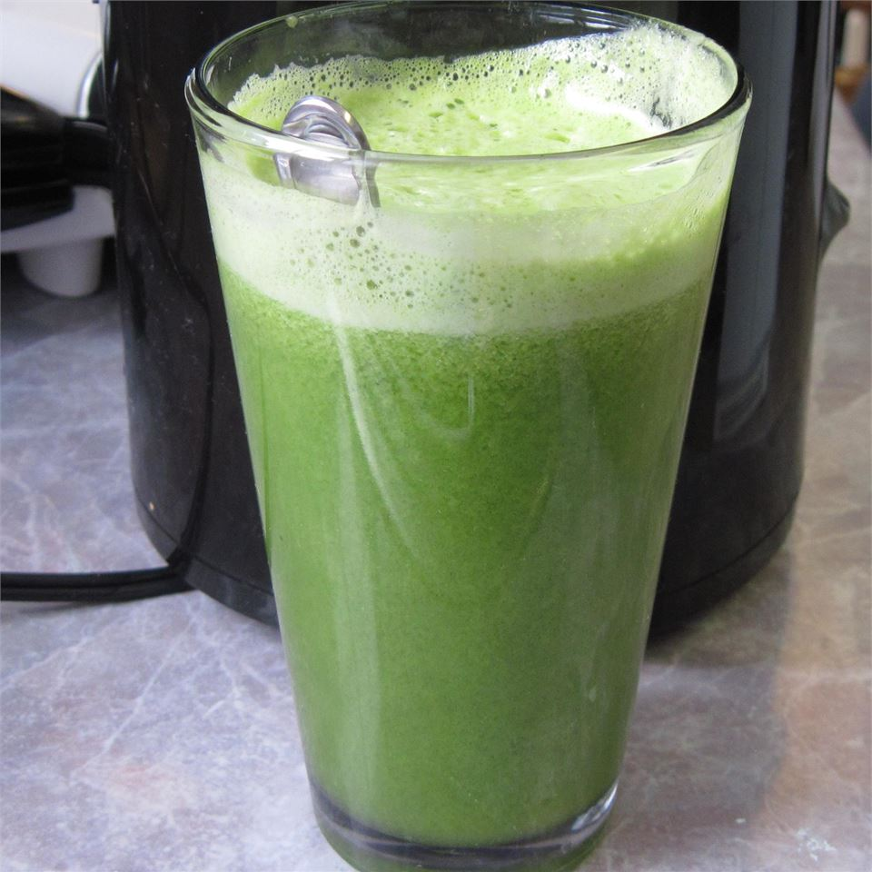

Drinks Recipe

Description
Great healthy drink for detoxing after the holidays or whenever you have overdone it.
Worth it to buy the organic celery,
even if you buy conventional for everything else.
Adjust fruit and veggie amounts to suit your personal taste. More apple equals a sweeter drink.
Store any extra in a glass jar in the fridge for up to a day. Shake before drinking.
Ingredients
To make this, you’ll need:
- 2 green apples, halved
- 4 stalks celery, leaves removed
- 1 cucumber
- 6 leaves kale
- ½ lemon, peeled /li>
- 1 (1 inch) piece fresh ginger
Steps
- Process green apples, celery, cucumber, kale, lemon,
and ginger through a juicer.
- Process green apples, celery, cucumber, kale, lemon,
and ginger through a juicer.
- Process green apples, celery, cucumber, kale, lemon,
and ginger through a juicer.